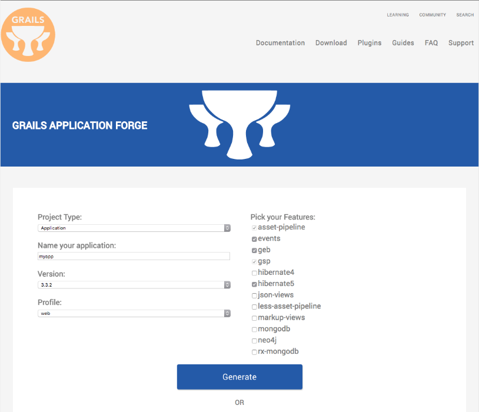

Grails Basic Auth
Learn how to secure a Grails app using 'Basic' HTTP Authentication Scheme.
Authors: Sergio del Amo
Grails Version: 3
1 Getting Started
RFC7617 defines the "Basic" Hypertext Transfer Protocol (HTTP) authentication scheme, which transmits credentials as user-id/password pairs, encoded using Base64.
In this guide you are going to create a Grails app and secure it with HTTP Basic Auth.
1.1 What you will need
To complete this guide, you will need the following:
-
Some time on your hands
-
A decent text editor or IDE
-
JDK 1.7 or greater installed with
JAVA_HOMEconfigured appropriately
1.2 How to complete the guide
To get started do the following:
-
Download and unzip the source
or
-
Clone the Git repository:
git clone https://github.com/grails-guides/grails-basicauth.git
The Grails guides repositories contain two folders:
-
initialInitial project. Often a simple Grails app with some additional code to give you a head-start. -
completeA completed example. It is the result of working through the steps presented by the guide and applying those changes to theinitialfolder.
To complete the guide, go to the initial folder
-
cdintograils-guides/grails-basicauth/initial
and follow the instructions in the next sections.
You can go right to the completed example if you cd into grails-guides/grails-basicauth/complete
|
If you want to start from scratch, create a new Grails 3 application using Grails Application Forge.

2 Writing the App
Create an app with the rest-api profile
grails create-app example --profile=rest-api
2.1 Add Security Dependencies
First thing we need to do is add the spring-security-core Grails Plugin to build.gradle.
compile 'org.grails.plugins:spring-security-core:3.2.1'Then run the command:
grails s2-quickstart example.grails User Role
The command generates the following domain classes:
-
grails-app/domain/example.grails.User -
grails-app/domain/example.grails.Role -
grails-app/domain/example.grails.UserRole
a password encoder listener:
src/main/groovy/example.grails.UserPasswordEncoderListener
and default security configuration at:
-
grails-app/conf/application.groovy
Modify the generated application.groovy to enable basic auth.
grails.plugin.springsecurity.useBasicAuth = true2.2 Controller
Create HomeController which returns the username of the authenticated user.
package example.grails
import groovy.transform.CompileStatic
import grails.plugin.springsecurity.SpringSecurityService
import grails.plugin.springsecurity.annotation.Secured
import grails.plugin.springsecurity.userdetails.GrailsUser
@CompileStatic
@Secured('isAuthenticated()')
class HomeController {
static responseFormats = ['json']
SpringSecurityService springSecurityService
def index() {
[name: loggedUsername()]
}
String loggedUsername() {
if ( springSecurityService.principal == null ) {
return null
}
if ( springSecurityService.principal instanceof String ) {
return springSecurityService.principal
}
if ( springSecurityService.principal instanceof GrailsUser ) {
return ((GrailsUser) springSecurityService.principal).username
}
null
}
}2.3 Views
Render the controller output as a JSON Payload with the aid of JSON Views.
model {
String name
}
json {
username name
}2.4 GORM Data Service
GORM Data Services take the work out of implemented service layer logic by adding the ability to automatically implement abstract classes or interfaces using GORM logic.
Create a GORM Data service to ease User domain class CRUD operations.
package example.grails
import grails.gorm.services.Service
@Service(User)
interface UserDataService {
User save(String username, String password, boolean enabled, boolean accountExpired, boolean accountLocked, boolean passwordExpired)
void delete(Serializable id)
int count()
}2.5 Test
Create a test which verifies the user authentication flow via Basic Auth.
package example.grails
import grails.plugins.rest.client.RestBuilder
import grails.plugins.rest.client.RestResponse
import grails.testing.mixin.integration.Integration
import spock.lang.Specification
@Integration
class HomeControllerSpec extends Specification {
UserDataService userDataService
def "verify basic auth is possible"() {
given:
RestBuilder rest = new RestBuilder()
final String username = 'sherlock'
final String password = 'elementary'
when:
User user = userDataService.save(username, password, true, false, false, false, )
then:
userDataService.count() == old(userDataService.count()) + 1
when:
String token = "${username}:${password}".encodeAsBase64()
RestResponse rsp = rest.get("http://localhost:${serverPort}/home") {
auth("Basic $token")
}
then:
rsp.status == 200
and:
rsp.json.username == username
cleanup:
userDataService?.delete(user?.id)
}
}2.6 Next Steps
Read Basic and Digest Authentication section of the Grails Springs Security Core Plugin documentation to learn about the different configuration options available for Basic Authentication.
3 Do you need help with Grails?
Help with Apache Grails
Apache Grails is supported by an active community of contributors and the Apache Software Foundation. If you need help working through a guide, want to discuss the framework, or have run into something that looks like a bug, the channels below are the right place to start.
-
Slack - real-time conversation with the Apache Grails community.
-
Developer mailing list - design discussions and contributor coordination.
-
Users mailing list - end-user questions and answers.
-
Issue tracker on GitHub - file a bug or feature request against the framework.
For Grails plugins, see the matching project on the apache org or the plugin’s own GitHub repository.